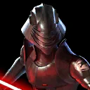
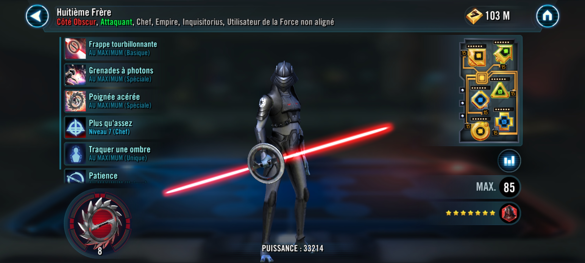
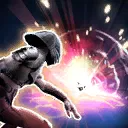
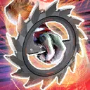

Eighth Brother
A stealthy member of the Inquisitorious with an arsenal of tricks and weapons to surprise his opponent.

A stealthy member of the Inquisitorious with an arsenal of tricks and weapons to surprise his opponent.

If Eighth Brother did not have Stealth this turn, he gains Stealth for 3 turns. Then, deal Physical damage to target enemy and, if the target is a Jedi, inflict 1 stack of Purge (max 6) until the end of the encounter, which can't be copied or resisted.

If Eighth Brother did not have Stealth this turn, he gains Stealth for 3 turns. Deal Physical damage to all enemies and inflict Accuracy Down and Burning for 2 turns. Jedi enemies damaged by this ability are instead inflicted with Blind and Burning for 2 turns, which can't be resisted.

If Eighth Brother did not have Stealth this turn, he gains Stealth for 3 turns. Deal Physical damage and consume up to 5 stacks of Purge. For each stack of Purge consumed this way after the first, deal Physical damage again.
- 1+ stack consumed: Inflict Healing Immunity for 2 turns
- 2+ stacks consumed: Inflict Speed Down for 2 turns
- 3+ stacks consumed: Inflict Ability Block for 1 turn
- 4+ stacks consumed: Inflict Buff Immunity for 2 turns
- 5 stacks consumed: Inflict Armor Shred for the rest of the battle
These debuffs cannot be resisted by Jedi enemies.

Empire allies have +5% Accuracy and +5% Potency. Inquisitorius allies have an additional +30% Accuracy and +30% Potency. Jedi enemies that gain Foresight from Jedi Unique abilities also gain Blind for 2 turns which can't be evaded or resisted. Whenever other Inquisitorius allies use a Basic ability, they have a 30% chance to inflict a stack of Purge (max 6) until the end of the encounter, which can't be copied, evaded, or resisted.
Omicron Boost : While in Territory Wars: Whenever a Jedi enemy gains Taunt from Jedi Unique abilities, all enemies take damage equal to 20% of their max Health. This damage can't defeat enemies. Whenever a Jedi enemy gains Critical Hit Immunity from Jedi Unique abilities, they dispel Critical Hit Immunity and gain Vulnerable for one 1 turn, which can't be resisted.
At the start of battle, Eighth Brother gains Stealth for 3 turns. Whenever Eighth Brother gains Stealth, he recovers 20% Health and 20% Protection.
Whenever Eighth Brother uses any of his abilities during his turn, if he had Stealth at the beginning of the turn, he loses Stealth and gains Accuracy Up and Potency Up for 2 turns. If that ability was Whirling Strike or Photon Grenades, he inflicts 1 stack of Purge (max 6) on any enemy damaged by that ability.

At the start of battle, if all allies (minimum 3) are Inquisitorius, this character gains 20% Max Health, Max Protection, and Potency. If this character is Stealthed at the start of turn, this character has +40% Defense Penetration and Offense while Stealthed. Whenever an enemy damages this character with an attack while attacking out of turn, that enemy gains a stack of Purge (max 6), which can't be evaded or resisted. Whenever Purge is consumed or dispelled on an enemy, this character gains 3% Turn Meter.